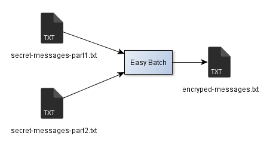

Processing data in parallel
1. Introduction
Easy Batch was designed with data processing parallelism in mind.
Easy Batch Engine implements the java.util.concurrent.Callable interface which turns it into a unit of work that can be submitted to a java.util.concurrent.ExecutorService.
Using the java.util.concurrent.ExecutorService with a pool of threads allows you to run multiple Easy Batch instances in parallel.
Usually, there are two main use cases for processing input data in parallel:
- Split the data source into multiple parts which will be processed by separated threads (or JVMs)
- Use a single data source and filter records to be processed by each thread
Easy Batch does not provide a feature to partition input data but allows you to process data in parallel for both cases above. So let's see how to achieve this with Easy Batch on a real use case!
In this tutorial, the goal is to encrypt an input text file containing a sensible set of data. The input file named secret-messages.txt has the following content:
This is a secret message1! This is a secret message2! This is a secret message3! This is a secret message4! This is a secret message5! This is a secret message6! This is a secret message7! This is a secret message8! This is a secret message9! This is a secret message10!
In a real use case, we suppose that this input file is a huge text file with millions of records and we would like to encrypt data in parallel.To keep the tutorial simple, we will only process 10 records.
We would like to run two Easy Batch instances to process records 1-5 and records 6-10 in parallel with two methods:
- The first one is by partitioning the input file into multiple parts.
- The second one is by using a single input file with record filtering.
To keep the tutorial simple, the encryption algorithm should simply reverse each record raw text. We will simulate a long encryption operation (1sec/record) with the following RecordProcessor implementation:
public class MessageEncrypter extends AbstractRecordProcessor<StringRecord> {
@Override
public void processRecord(final StringRecord record) throws Exception {
Thread.sleep(1000);//simulating a long encryption algorithm
System.out.println(new StringBuilder(record.getRawContent()).reverse().toString());
}
}
Note that in this tutorial, we do not need to map each record to a domain object, nor validate records against any constraint.
So let's get started!
2. Reading data from multiple input files
In this part, we have split the input file secret-messages.txt into two slices: secret-messages-part1.txt containing records 1-5 and secret-messages-part2.txt containing records 6-10:

The following listing shows how to run two Easy Batch instances to process these two parts in parallel:
// To avoid any thread-safety issues,
// we will create 2 engines with separate instances of record readers and processors
// Build an Easy Batch engine 1
EasyBatchEngine easyBatchEngine1 = new EasyBatchEngineBuilder()
.registerRecordReader(new FlatFileRecordReader(new File(args[0]))) //read data from secret-messages-part1.txt
.registerRecordProcessor(new MessageEncrypter())
.build();
// Build an Easy Batch engine 2
EasyBatchEngine easyBatchEngine2 = new EasyBatchEngineBuilder()
.registerRecordReader(new FlatFileRecordReader(new File(args[1]))) //read data from secret-messages-part2.txt
.registerRecordProcessor(new MessageEncrypter())
.build();
// Create a 2 threads pool to call Easy Batch engines in parallel
ExecutorService executorService = Executors.newFixedThreadPool(2);
Future<EasyBatchReport> easyBatchReport1 = executorService.submit(easyBatchEngine1);
Future<EasyBatchReport> easyBatchReport2 = executorService.submit(easyBatchEngine2);
executorService.shutdown();
The advantage of this approach is that each Easy Batch engine reads only its own part and not the whole data source.
The drawback of this approach is that you should split the data source into multiple parts since Easy Batch does not provide data partitioning feature and then merge results.
Note that the merge operation is optional (it depends on the use case) and can be avoided if your RecordProcessor implementation can write data concurrently in a destination data source (a database for instance).
Note also that Easy Batch engines run in the same JVM. You can also run multiple instances in separate JVMs if you want.
The complete source code of this tutorial is available here.
To run the tutorial with maven, launch the following command in the easybatch-tutorials directory :
mvn exec:java -PrunParallelMultipleFilesTutorial
At the end of execution, you should see all the secret messages encrypted in the console.
3. Reading data from a single input file
Easy Batch does not provide a feature to partition input data, but you will see how to achieve this using the record filtering technique.
In this part of the tutorial, we will configure two Easy Batch instances as follows:
- The first engine instance will read data from the
secret-messages.txtfile and filter records which numbers are greater than 5 - The second engine instance will also read data from the
secret-messages.txtfile and will filter records which numbers are lower than 6
The figure below illustrates this configuration:

The following listing shows the code to achieve this configuration:
// To avoid any thread-safety issues,
// we will create 2 engines with separate instances of record readers and processors
// Build an Easy Batch engine 1
EasyBatchEngine easyBatchEngine1 = new EasyBatchEngineBuilder()
.registerRecordReader(new FlatFileRecordReader(new File(args[0]))) //read data from secret-messages.txt
.registerRecordFilter(new RecordNumberGreaterThanRecordFilter(5)) // filter records 6-10
.registerRecordProcessor(new MessageEncrypter())
.build();
// Build an Easy Batch engine 2
EasyBatchEngine easyBatchEngine2 = new EasyBatchEngineBuilder()
.registerRecordReader(new FlatFileRecordReader(new File(args[0]))) //read data from secret-messages.txt
.registerRecordFilter(new RecordNumberLowerThanRecordFilter(6)) // filter records 1-5
.registerRecordProcessor(new MessageEncrypter())
.build();
//create a 2 threads pool to call Easy Batch engines in parallel
ExecutorService executorService = Executors.newFixedThreadPool(2);
Future<EasyBatchReport> easyBatchReport1 = executorService.submit(easyBatchEngine1);
Future<EasyBatchReport> easyBatchReport2 = executorService.submit(easyBatchEngine2);
executorService.shutdown();
The advantage of this approach is that you don't need to split the input data source into multiple parts.
The drawback of this approach is that each Easy Batch instance will read the whole data source which can be costly but remains negligible comparing to the overall speedup you can achieve with this technique.
The complete source code of this tutorial is available here.
To be able to compare results and speed up, first we run a single Easy Batch instance to process the input file secret-messages.txt and record the total processing time (not shown in the listing above).
Then, we run two Easy Batch instances that will read data from the same secret-messages.txt file but operate on separate parts (listing above).
Finally, we will compare performance results and speed up based on the overall processing time of each method.
To run the tutorial with maven, launch the following command in the easybatch-tutorials directory :
mvn exec:java -PrunParallelSingleFileTutorial
At the end of execution, you should see all the secret messages encrypted in the console and the following output at the end:
############################################################################### Processing the input file with two Easy Batch instances in parallel took 5049ms Processing the input file with a single Easy Batch instance took 10806ms ###############################################################################
As expected, running two instances of Easy Batch in parallel on separate parts of the input file is twice faster than a single instance. This 200% speed up can actually be increased to x * 100% if you use the same technique with x threads! :
4. Conclusion
In this tutorial, we have seen how to run multiple Easy Batch instances in parallel to speed up the data processing and decrease the overall processing time.
The following table summarizes the advantages and drawbacks for each approach of parallelism:
| Parallelism approach | Advantages | Drawbacks |
|---|---|---|
| * Multiple data source parts * Multiple Easy Batch instances |
Each Easy Batch engine reads only its own part and not the whole data source | Need to split the data source into multiple parts since Easy Batch does not provide data partitioning feature |
| * Single data source * Multiple Easy Batch instances (with record filtering technique) |
No need to split the input data source into multiple parts | Each Easy Batch instance will read the whole data source |
Even though the tutorial was about processing an input flat file, the same technique of record filtering can be used with any type of data source.